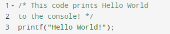

When an organization is not aware of software functionality or
the intention of source code, the results are an intangible risk to the
organization. Business decisions cannot be made about risk treatments or controls if
the risks are unknown. Security practitioners cannot defend effectively against
every unknown. Security through obscurity is never a solid strategy for
organizational security or secure software.
Objectives
Describe undocumented functionality and source code.
Overview
Undocumented functionality and source code equate to undefined
organizational risk. Software development plans should define adequate
documentation, and software test plans should provide methods to verify proper
documentation exists as an acceptance criterion.
Self-Documenting Source Code
Source code that is readable and easy to understand without
extensive documentation is often considered self-documenting code. The problem with
this definition is that self-documenting code is subjective. Perhaps the developer
who writes the code finds tightly interlaced regular expressions, lambda functions,
and ternary operators used together in a nested fashion to be self-documenting, but
to everyone else, it looks like obfuscated nonsense.
Consider the following source from a contest to write
purposefully hard to read C code. Is it harmless or malicious?
Figure 8: International Obfuscated C Code Contest
Example
Comments and Naming Conventions
The person who wrote the previous code can probably read it, but
is this code self-documenting? No. Without context regarding the functionality of
the source block, human interpretation becomes even more complicated.
Most programming languages and integrated development
environments support block (i.e., multiline) and inline comments. Comments typically
appear at the beginning of functions, logical transitions, and code sections where
developers are concerned about readability. Many coding standards provide
language-specific guidelines for consistent commenting within source code. Comments
provide source context and lessen the risk of regressions throughout the software
life cycle.

Figure 9: C Block Comment Example
Figure 10: Inline Comment Example
In addition to commenting, variable naming also contributes to
readability. There are several naming conventions for software development, such as
pascal, camel, snake, and kebab case syntax. Naming conventions are essentially
rules for choosing character sequences for source code identifiers and
documentation. They dictate structure for naming methods, folders, variables, etc.
In case you were wondering, the result of the obfuscated code
block above is “Hello World!” Both comment examples produce the same code and are
self-documenting.
Preventing Unreadable Code
Readability issues and uncommented code can be prevented by
proactively checking the source for compliance using a lint or static analysis tool
during gated check-in. These tools should align with the SDP guidance and enforce
consistent style. There are many static analysis tools that can be used for this
purpose, most of which are language specific. For checking our C example above, a
development process could use cpplint. The development pipeline could
potentially force styling for readability using an auto-formatter such as
clang-format. Alternatively, manual peer review checklists could include
concerns for improperly commented source code.
Identify Undocumented
Functionality
Undocumented functionality in applications is functionality that
exists but is not officially documented or recognized. There are several problems
associated with using undocumented functions. Who is responsible for maintaining
them and managing associated security risks? What is the intended function? Without
knowing the intended function, how can the function be tested properly?
The absence of documentation means that you really do not know
how the function should work. Therefore, you cannot distinguish between a bug and
intended behavior. Additionally, the function may change in future versions, which
may range from implementation changes to the function being totally removed and
adversely impacting applications that invoke and rely on such undocumented
functions.
Preventing Undocumented Code
Several frameworks exist that can generate documentation based
on source code. When leveraged correctly, these frameworks produce software
documentation from commenting, naming, and source code structure. Additionally, when
documentation is more closely integrated into the development process, it provides a
higher level of assurance that functionality will be documented properly throughout
the life cycle. Each time the software is built, documentation could theoretically
be generated simultaneously to reflect the changes to functions. Swagger UI is one
of many examples of an open-source tool for autogenerating documentation for
functionality.
Undocumented Functionality (6.4)
When an organization is not aware of software functionality or the intention of source code, the results are an intangible risk to the organization. Business decisions cannot be made about risk treatments or controls if the risks are unknown. Security practitioners cannot defend effectively against every unknown. Security through obscurity is never a solid strategy for organizational security or secure software.
Objectives
Overview
Undocumented functionality and source code equate to undefined organizational risk. Software development plans should define adequate documentation, and software test plans should provide methods to verify proper documentation exists as an acceptance criterion.
Self-Documenting Source Code
Source code that is readable and easy to understand without extensive documentation is often considered self-documenting code. The problem with this definition is that self-documenting code is subjective. Perhaps the developer who writes the code finds tightly interlaced regular expressions, lambda functions, and ternary operators used together in a nested fashion to be self-documenting, but to everyone else, it looks like obfuscated nonsense.
Consider the following source from a contest to write purposefully hard to read C code. Is it harmless or malicious?
Figure 8: International Obfuscated C Code Contest Example
Comments and Naming Conventions
The person who wrote the previous code can probably read it, but is this code self-documenting? No. Without context regarding the functionality of the source block, human interpretation becomes even more complicated.
Most programming languages and integrated development environments support block (i.e., multiline) and inline comments. Comments typically appear at the beginning of functions, logical transitions, and code sections where developers are concerned about readability. Many coding standards provide language-specific guidelines for consistent commenting within source code. Comments provide source context and lessen the risk of regressions throughout the software life cycle.
Figure 9: C Block Comment Example
Figure 10: Inline Comment Example
In addition to commenting, variable naming also contributes to readability. There are several naming conventions for software development, such as pascal, camel, snake, and kebab case syntax. Naming conventions are essentially rules for choosing character sequences for source code identifiers and documentation. They dictate structure for naming methods, folders, variables, etc.
In case you were wondering, the result of the obfuscated code block above is “Hello World!” Both comment examples produce the same code and are self-documenting.
Preventing Unreadable Code
Readability issues and uncommented code can be prevented by proactively checking the source for compliance using a lint or static analysis tool during gated check-in. These tools should align with the SDP guidance and enforce consistent style. There are many static analysis tools that can be used for this purpose, most of which are language specific. For checking our C example above, a development process could use cpplint. The development pipeline could potentially force styling for readability using an auto-formatter such as clang-format. Alternatively, manual peer review checklists could include concerns for improperly commented source code.
Identify Undocumented Functionality
Undocumented functionality in applications is functionality that exists but is not officially documented or recognized. There are several problems associated with using undocumented functions. Who is responsible for maintaining them and managing associated security risks? What is the intended function? Without knowing the intended function, how can the function be tested properly?
The absence of documentation means that you really do not know how the function should work. Therefore, you cannot distinguish between a bug and intended behavior. Additionally, the function may change in future versions, which may range from implementation changes to the function being totally removed and adversely impacting applications that invoke and rely on such undocumented functions.
Preventing Undocumented Code
Several frameworks exist that can generate documentation based on source code. When leveraged correctly, these frameworks produce software documentation from commenting, naming, and source code structure. Additionally, when documentation is more closely integrated into the development process, it provides a higher level of assurance that functionality will be documented properly throughout the life cycle. Each time the software is built, documentation could theoretically be generated simultaneously to reflect the changes to functions. Swagger UI is one of many examples of an open-source tool for autogenerating documentation for functionality.